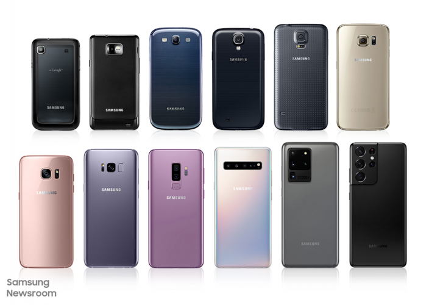

La Historia de Samsung
Publicado el 26/05/2025
Ignacio Confalonieri
Samsung es una de las corporaciones más grandes del mundo, conocida principalmente por su división de tecnología, aunque su origen es muy diferente. Fue fundada en 1938 por Lee Byung-chul en Corea del Sur como una empresa de comercio que exportaba pescado seco, frutas y verduras.
Con el paso de las décadas, Samsung diversificó sus actividades en industrias como la construcción, seguros, textiles y más. No fue hasta los años 60 y 70 que comenzó su incursión en la electrónica.

En 1969 se fundó Samsung Electronics, que pronto se convertiría en el corazón de la compañía. En los años 80 y 90, Samsung comenzó a desarrollar y fabricar televisores, microondas, chips de memoria y teléfonos móviles.
En el siglo XXI, Samsung se consolidó como uno de los principales fabricantes de smartphones con la serie Galaxy, compitiendo directamente con Apple. También es líder en pantallas AMOLED, electrodomésticos inteligentes, semiconductores y dispositivos electrónicos.
Hoy, Samsung es sinónimo de innovación tecnológica, con una fuerte inversión en investigación, desarrollo y sostenibilidad. Además, juega un rol clave en el desarrollo de chips, redes 5G y pantallas flexibles.
La evolución de Samsung demuestra cómo una empresa puede transformarse desde sus raíces comerciales hasta convertirse en un gigante global de la tecnología.